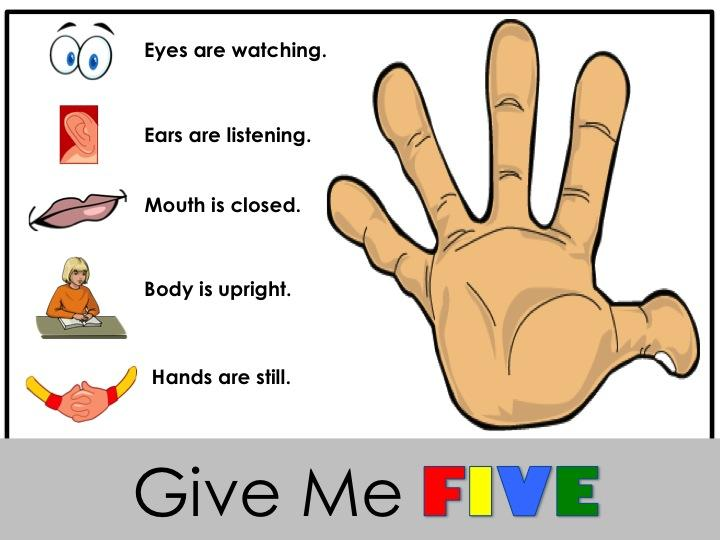

active listeners listen when someone is giving instructions so they understand instruction and know what to do.Active listeners ask questions when they don't understand they focus on whats being said they look at the speaker their not just looking around,their mouth is closed their sitting quietly not making little distracting sounds their just sitting faced the speaker paying attention and being focused and asking questions if they need too.
Learn more at inpd.co 